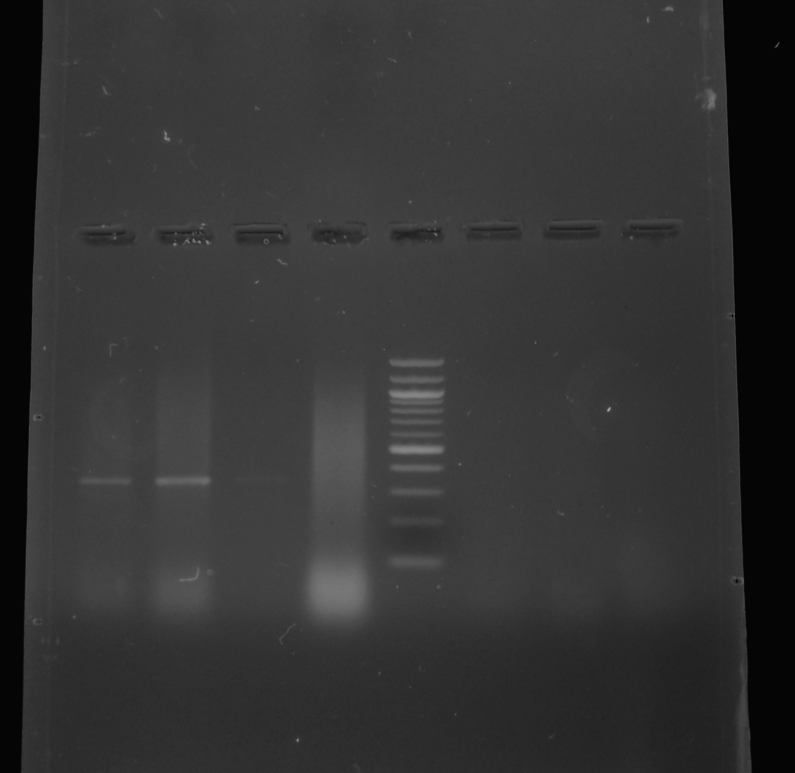
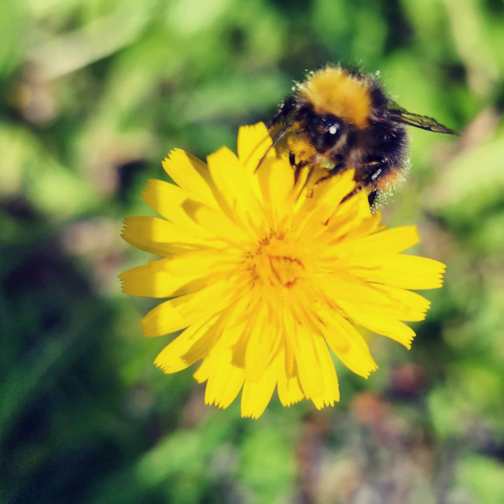
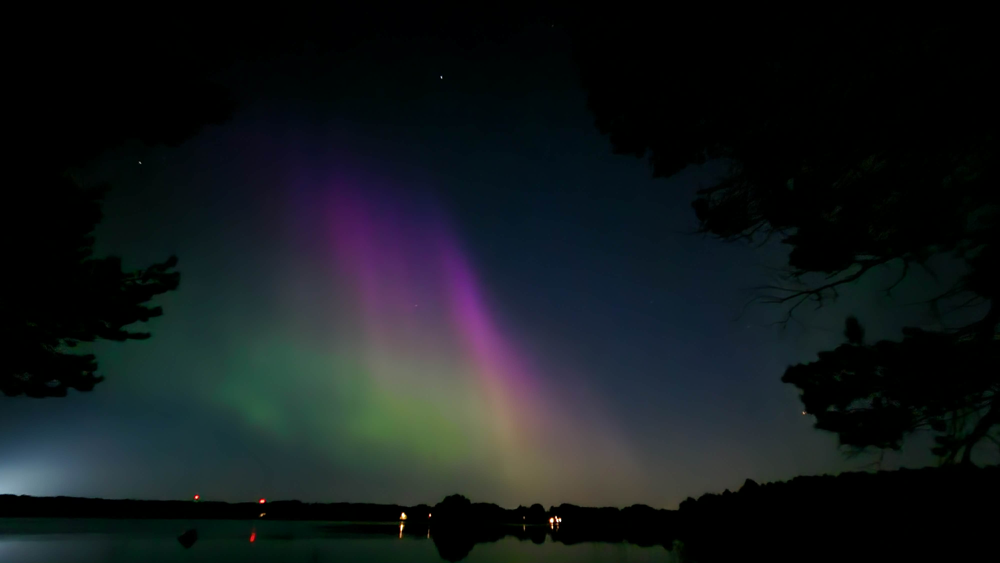
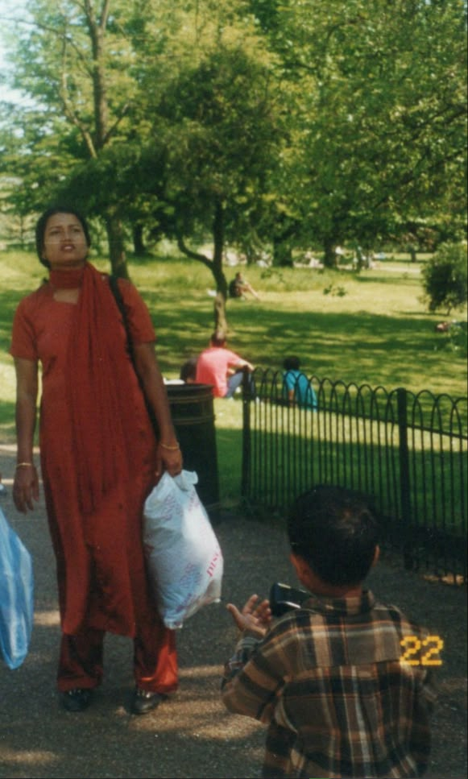
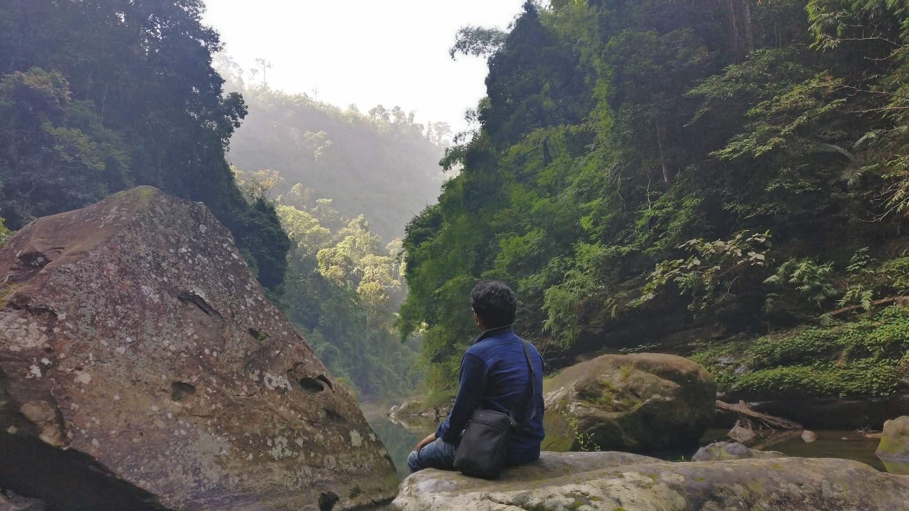
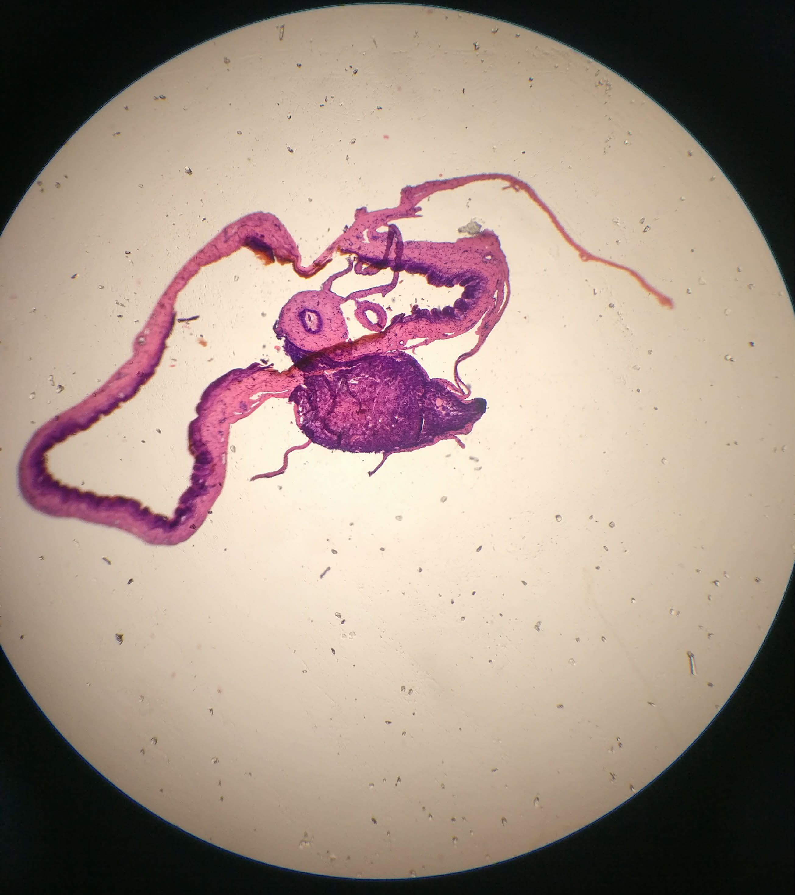
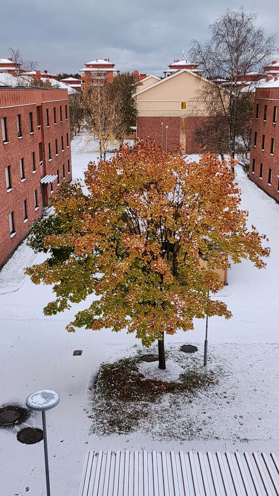

A collection of snippets, ideas, images, and little
things that made my day.

First successful PCR confirming
Acinetobacter baumannii.
Three months of painstaking lab work, followed by
a long wait for the primers. Then came this tiny
band, matching the positive control. I was so
excited that I showed it to everyone and proudly
announced that “this is going into my submission.”

Came for the flowers, stayed for the photo.
I was taking photos of flowers when this bee suddenly
showed up. Naturally, I assumed it wanted a photo too.
Took a few shots, and then it flew away. I suppose
that was its entire modelling career.

The aurora was better in person.
I met this guy while he was visiting Umeå
from Peru, and somehow we ended up looking for
aurora together. Neither of us had seen one up close
before. While the aurora was great, the photo,
unfortunately, had to work with my camera.

The photographer became the subject.
Someone (probably my father) took this photo of me and mom while I was trying to take
a photo of her. Is this considered metaphotography or am I just overthinking a photo?

The view was breathtaking. Unfortunately, so was my sudden realization that none of this makes sense.
Someone happened to photograph the exact moment I was questioning my entire existence. Honestly, fair use of a camera.

The case of the mysterious little heart.
A mysterious heart-shaped specimen has appeared under the microscope, and the case is far from elementary.
I have examined every evidence yet I have no idea what it is. I am beginning to suspect the microscope.
Care to help me crack the case before I accuse the instrument?

The tree understood the assignment.
This was the view from my kitchen in Umeå. The tree stayed there through summer, snow, darkness, and whatever else Scandinavian weather decided to throw at it.
Somehow, it always looked like it knew exactly what it was doing.